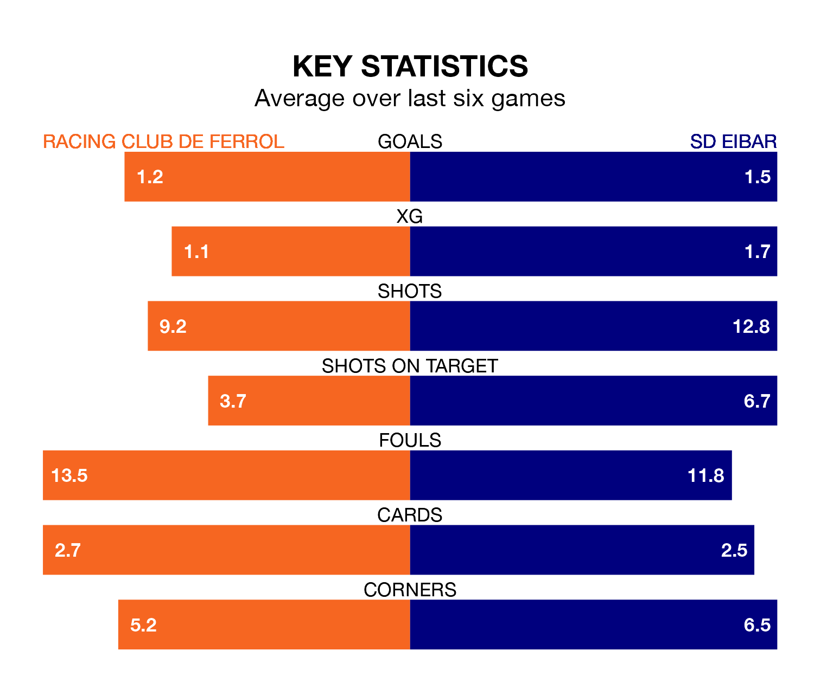

Two of the Segunda División's top sides face each other in Sunday lunchtime's kick-off, when third-placed Racing Club de Ferrol host second-placed SD Eibar.
Racing have picked up 11 wins and eight draws from 24 games so far this season, and sit on the same number of points as the visitors going into the 1pm match.
Eibar, meanwhile, have won 12 and drawn five, picking up 41 points.
With 40 goals in 24 games so far this season, Eibar are the league's highest scorers with 1.7 goals per game. And they are conceding at an average rate, letting in 29 goals at a rate of 1.2 per game.
Racing are also above average scorers, with 1.3 goals per game, compared to a league average of 1.2. They have conceded 1.1 goals per game.
In Juan Diego Molina Martínez, the away side have one of the league's most on-form strikers so far this season. He has notched nine goals in 22 appearances, to sit sixth in the scoring charts.
His goal rate of one every 200 minutes is quicker than that of Iker Losada Aragunde, Ferrol's top scorer with a goal every 274 minutes, and a total of seven goals in 24 games.
The hosts are in mixed form in the Segunda División, with three wins and a draw from their last six games.
With three wins and two draws over that period, Eibar's form is slightly better – they have taken 11 points from 18, compared to Racing's 10.
Racing's last match was on Sunday, a 2-1 win against Sporting Gijón, with Sabin Merino and Álvaro Giménez getting the goals for Racing.
Eibar beat Mirandés 1-0 last time out, on January 26.
Updated: 13:20 (UTC), 29/01/24